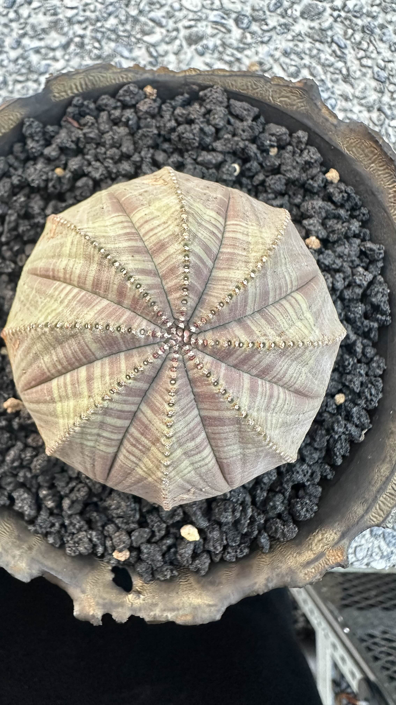

布紋球
Euphorbia obesa Hook.f.

2026 / 09 / 20 · Ziv 的第一筆觀察
先認識這顆球
布紋球的受理學名是 Euphorbia obesa。它是大戟科大戟屬的多肉亞灌木，原生於南非南中部開普省的乾燥地帶。它像仙人掌，但不是仙人掌：成熟植株把身體縮成短圓球或矮柱，稜線與條紋把每次生長留在表面。
本株可見特徵八條寬稜，由中心放射
本株色澤鼠尾草綠、灰褐、淡紫條紋
原生範圍南非大卡魯與南中部開普省
資料界線本頁不把單次觀察推論為養護規則
在它的原產地，被怎麼記住
在南非，這株植物有一個 Afrikaans 常用名：Vetmensie。它長在東開普的卡魯石坡、鬆砂與矮灌木之間，灰綠與暗紫的身體把自己藏進碎石裡。地方名稱、石頭中的位置、和難以被看見的身形，是目前能查到的「它在那裡怎麼被叫、怎麼被遇見」；沒有可靠資料，我不把它延伸成不存在的民間神話。
但它也有一段被帶離原地的歷史。1897 年，Peter MacOwan 在 Graaff-Reinet 附近採得標本並送往 Kew；描述後不久，收藏採集就開始壓迫野外族群。南非官方目前仍將它列為瀕危，估計野外成熟個體少於 500 株。今天在盆裡看見的這顆球，並不是和原產地無關的可愛形狀。
它在這裡的一年
這顆布紋球在我這邊至少一年。到目前為止，生長一直很順利，也成功結過種子。這不是一份把它養成標準答案的紀錄；只是先把今天的樣子、它已經待了多久，和一件確實發生過的事留住。
今天 9 月 20 號，我拍了這顆布紋球，它是大戟科的。
特別想要幫它做記錄，是因為它在我這邊至少應該有一年了吧。目前來說都長得蠻順利的，也有成功結種子。
特別想要幫它做記錄，是因為它在我這邊至少應該有一年了吧。目前來說都長得蠻順利的，也有成功結種子。
資料來源
Kew — Plants of the World Online：受理學名、原生範圍與生活型。
SANBI · PlantZAfrica：八稜、灰綠與暗紫橫紋、漸尖主根、地方名與 1897 年採集歷史。
SANBI Red List：卡魯棲地、採集壓力與野外族群估計。